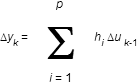
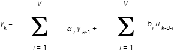

DeltaV Predict
DeltaV Predict implements multivariable, model predictive control in DeltaV environments. It allows you to control interactive processes within measurable operating constraints while automatically accounting for process interaction and measurable disturbances. It also allows you to easily address the numerous small and medium-sized multivariable processes (2×2, 3×3 or 8×8) that can benefit from MPC technology.
Predict allows users with moderate process control knowledge to apply MPC control strategies. It also makes applying such strategies easier and faster than it would be using a PID controller and traditional techniques to address process disturbances, operating constraints, and loop interaction through the application of feedforward, override control or decoupling networks.
DeltaV Predict consists of the following set of tools:
- Model Predictive Control (MPC) function block - allows you to implement multivariable control strategies
- MPC Simulation function block - allows you to create multivariable training systems
- Predict application - allows you to commission the MPC function block and create process models to use with the MPC Process Simulator function block
- MPC Operate application and advanced control dynamos - enable operator to view and interact with control implemented with the MPC function block
The software components associated with the DeltaV Predict require that you purchase licenses for the DeltaV controller and the ProfessionalPLUS workstation.
This chapter discusses the identification algorithm used for process model identification as well as MPC control and process simulation. The control and simulation functionality provided by the MPC and MPC Process Simulator function blocks is described as well. This chapter also outlines how you can use the Predict application to test a process and identify the associated step response model to generate the control. In addition, it describes the simulation provided by the MPC Process Simulator function block. It also explains how to use a DeltaV Operate dynamo set to interface with the MPC function block.
The Model Predictive Control (MPC) function block can replace the standard PID function block and other blocks that can be used with the PID block to implement feedforward, decoupling networks, and override for multivariable control. The MPC function block is contained in the Advanced Control palette. You can configure and download this function block in a similar way to other DeltaV control blocks. The MPC Process Simulator function block is also part of the Advanced Control palette. You can use it to create an offline operator training system for an application that utilizes model predictive control.
With DeltaV Predict, you can run an automated test on your process after downloading the module containing the MPC function block. Data automatically gathered by the Continuous Historian during testing is used by the Predict application to create a step response model of your process. You can evaluate the accuracy of the model using the verify support provided as part of the model generation. DeltaV Predict uses the verified model to automatically generate the controller matrix used by the MPC function block. Special advanced control dynamos allow you to easily define an MPC operator interface.
Once you have generated the control using DeltaV Predict, you can download the module containing the MPC function block with the updated control matrix into a DeltaV controller. Through the DeltaV Predict operator interface, you can place the control into operation so that you can monitor it. A special diagnostic screen allows you to detect any problems in MPC operation. If this diagnostic tool shows that the process has changed, you can easily regenerate the MPC controller and download it to the MPC function block.
DeltaV Predict Algorithm
This section presents the technical background and implementation of Model Predictive Control (MPC) as implemented in DeltaV Predict. The applied predictive control algorithm has its roots in Dynamic Matrix Control (DMC) with significant modifications, such as prediction horizon-dependent penalty on error, control horizon-dependent penalties on moves, asymmetric funnel control, range control and reference trajectory. Controller robustness is substantially improved as a result of these enhancements.
Understanding the details of the MPC algorithm is not necessary to successfully use DeltaV Predict. Skip to the Using DeltaV Predict topic unless you have an interest in how the MPC algorithm and the associated process identification are implemented in DeltaV Predict.
Process identification is performed using two types of models: Finite Impulse Response (FIR) and Auto-Regressive (ARX). Model validation is accomplished by matching simulated and real process data. Constraints on the process outputs are handled by managing working setpoints of the controlled variables. Process optimization is achieved by maximizing or minimizing a selected process input until one manipulated variable approaches its limit. Such optimization is an inherent part of the MPC algorithm. The MPC algorithm is embedded in the DeltaV controller as a function block and is supported by DeltaV Predict.
Process Modeling and Identification
The process model is the basis of MPC technology. DeltaV Predict uses step response modeling for the MPC controller. This approach has been proven effective in numerous DMC applications. Step response modeling makes prediction of process outputs explicitly available for display in the application. The predicted error vector is computed as an input to the MPC controller. Displaying prediction to an operator is an important way to visually evaluate the process control. DeltaV Predict's operator interface displays the future process outputs. The MPC function block develops future process outputs as a process state and uses modified state space form for process modeling.
For a single input, single output (SISO) process, the future prediction of the process output can be calculated as follows:
xk+1 = Axk + BΔuk + FΔwk
y0 = Cxk+1
where:
xk = [y0, y1, yi,…yp -1]T is vector of future output prediction 0,1…, i,… , p-1 steps ahead at the time k
A is shift operator, which is defined as Axk = [y1, y2,…yi,…, yp-1, yp-1]T
B = [b0, b1,…bi,…, bp-1]T is vector of p step response coefficients
Δuk = uk - uk-1 is change on the process input/controller output at the time instant k
Δwk process output measurement - process model output, mismatch resulted from the noise, unmeasured disturbances, and model inaccuracy
F filter, p dimension vector with unity default values
C is the operator that takes the first component of the xk+1 vector
For an n outputs and m inputs process, vector Xk has dimension n*p, and vector B is converted into a matrix with dimension n*p rows and m columns.
You can identify the step response model using two modeling techniques: FIR and ARX. Use the short horizon process model to identify the differential FIR model. For example, the following equation applies to the SISO process:

Where Δyk = yk - yk-1 is the change on the process output at the time instant k.
p is prediction horizon, with a typical default value for MPC model 120. Identifying step response with full prediction horizon and as many as 120 coefficients causes overfitting and results in significant parameter uncertainty.
By using a short horizon with 30 or 40 points for the FIR model, you can avoid model overfitting. An FIR model with a short horizon provides an initial part of the step response and is adequate for defining dead times using a heuristic approach. The dead times are then used in a ARX model, which has significantly fewer coefficients than an FIR model. For example, the following equation applies to the SISO process:

A and V are autoregressive and moving average orders of ARX with a default value of 4.
For a MIMO process, superposition is applied from each input (additive action) on every output both in FIR and ARX models.
Use an ARX model and apply unit step on one of the inputs to get step responses for that input. To get a complete model, repeat the procedure of applying unit steps for every input.
As a result of using this combined identification technique, an optimal process model is developed.
MPC Controller
The MPC controller minimizes the squared error of a controlled variable over prediction horizon and the squared error of controller output over control horizon:
min {||Γy[X(k) - R(k)]||2 + ||ΓuΔU(k)||2}
ΔU(k)
where:
- X(k) = controlled output p-step ahead prediction vector
- R(k) = p-step ahead setpoint vector
- ΔU(k) = m-step ahead incremental controller output moves vector
- Γy = diag(Γy1,… , Γyp) = penalty matrix on the output error
- Γu = diag(Γu1,… , Γum) = penalty matrix on the control moves
The solution is in the form:
ΔU(k) = (SuTΓyTΓySu + ΓuTΓu)-1SuTΓyTΓyEp(k)
where:
Su = process dynamic matrix built from step responses, p × m for SISO model and p*no × m*ni matrix for MIMO model with ni inputs and no outputs
Ep(k) = error vector over prediction horizon
The performance of the control algorithm can be modified using the following adjustable parameters: p, m, Γu, and Γy. From an implementation standpoint, p and m are not convenient to use as tuning parameters. In DMC implementations, Γu and Γy are applied as scalars (that is, control error is multiplied by the scalar Γy over the whole prediction horizon), and any controller moves over control horizon are multiplied by the scalar Γu.
The robustness of the controller can be significantly improved by shaping Γy and Γu coefficients dependent on control error and control move predictions. Various functions can be used for shaping the coefficients of Γy - linear, exponential, and so on. The current implementation applies linear function with the option to set some initial coefficients to zero. The number of initial coefficients in Γy equal to zero is called the patience factor. The application of incremental penalty on error function is preferred when the initial part of a step response is uncertain but process steady gain is reasonably well defined.
Γu is a basic controller-tuning parameter defined at the controller generation phase. Increasing Γu makes control more damped, and, in reverse, decreasing Γu makes the control action more aggressive and control response faster. Another degree of tuning can be achieved by applying decreasing penalties on future moves. This makes the first controller move less aggressive since next moves are relaxed and can be used with less penalties for error correction. It is readily apparent that the second and next moves, in this case, can violate move constraints. This is not a practical concern since controller moves are recalculated during every scan and only the first move is implemented. As a result, the first move is smaller and controller robustness is increased.
In addition to shaping the controller structure at the generation phase, a number of features have been implemented to manage controller behavior and robustness online. Refer to the following figure.
One important tuning parameter is the setpoint filter, which is also known as the reference trajectory. The Predict trajectory acts in a different way than the trajectory currently used in other MPC products. Instead of penalizing any departure from the trajectory, only those deviations that are below trajectory or above setpoint value are penalized (Area A and Area C if control range = 0). In addition, the control error is considered zero if the control variable is within range (Area C with range > 0). These features constitute a funnel control, which can be shaped online by changing the setpoint filter time constant and range, which further enhances controller robustness and flexibiltiy.
During controller generation, all of the controller settings are calculated depending on process model, and there is no need for user involvement. However, if you identify yourself as an Expert using the Option selection in DeltaV Predict, you can change default controller settings to enhance specific features.
Output Constraints Handling
A typical MPC configuration includes both controlled and constrained variables. The MPC controller does not take action on constrained variables unless a predicted constraint variable violates the constraint limit. In that case, the MPC controller changes the working setpoint of the selected controlled variable on the value:
ΔSPCV = -r*GCV-AV*ΔAV
where:
ΔAV = the magnitude of the predicted steady state constraint violation
GCV-AV = the gain relationship between constraint variable (AV) and CV
r = the relaxation factor, < 1
ΔSPCV = the change in working setpoint of the controlled variable
The association between constrained variables and controlled variables is established during configuration. Therefore, the gain relationship is defined automatically from the process model. If the constraint limit violation ends, the working setpoint returns in a stepwise manner to the desired setpoint value.
Optimization
The objectives of optimization often include maximizing product value and minimizing raw material cost. In most cases where a linear model is applied for control, linear programming (LP) can be applied for optimization equally well. The Simplex algorithm or its modifications serves for the LP optimal solution. If a feasible solution exists, it is always located at one of the limit intersections. We use this result to perform simple optimization. This is done using a priori knowledge where we know there are optimization targets, such as the minimization or maximization of one of the production parameters within constraints on process inputs.
A typical MPC configuration can include three controlled parameters (CV), up to four constraint parameters (AVs), and up to four disturbances (DVs). To control three CVs, three manipulated variables (MVs) plus at least one additional MV are used for optimization. The extra MV controls a process input that sets up the optimized parameter for production rate or raw material cost. Finally, an extra CV is introduced, which is a shadow of the optimized MV. This is done by connecting the optimizing MV to an extra CV. In DeltaV Predict, we call this the optimizing CV. The MPC controller generated for this configuration becomes an optimizing controller. By setting the setpoint of the optimizing CV to a maximum (or minimum) achievable value of the optimizing MV, the MPC function block drives the optimizing MV toward optimal value at the setpoint of the optimizing CV until any of the manipulated variables (or, specifically, any predicted value of MV) violates an input limit. Then, the optimizing MV changes until all manipulated variables are within their input or output limits.